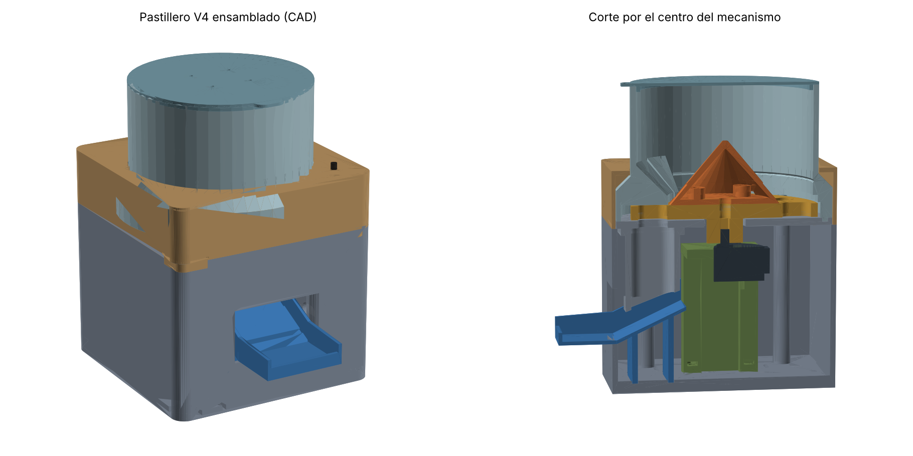
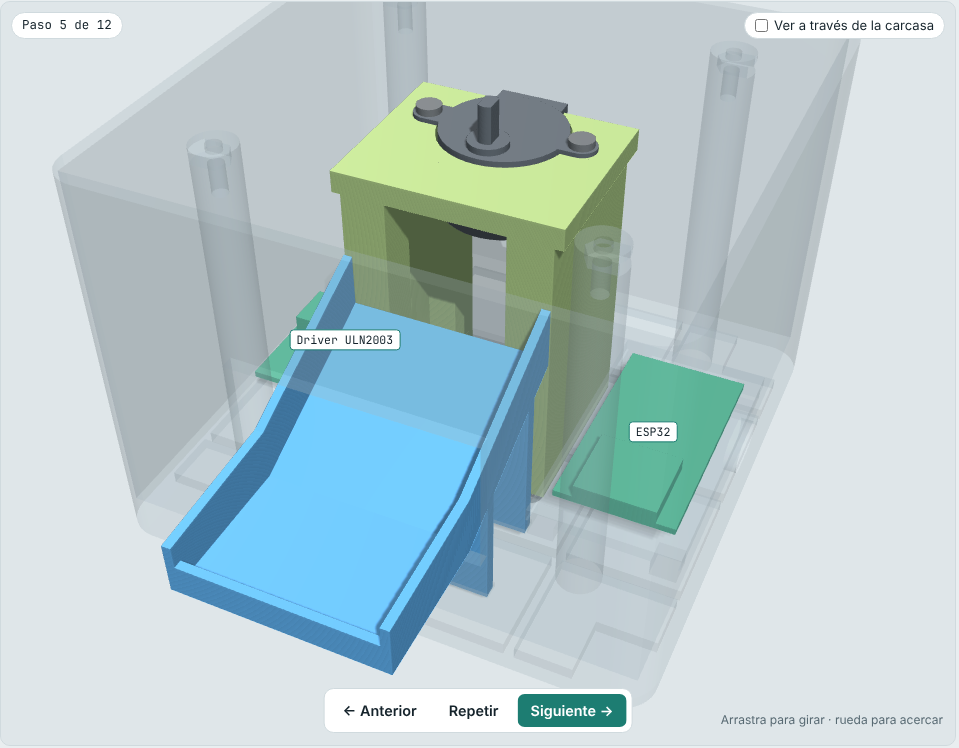
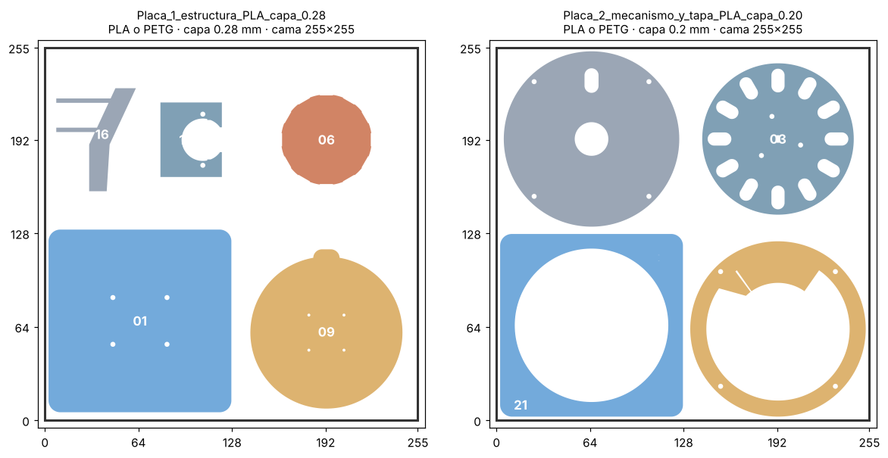

Últimos avances, evidencia reciente y estado funcional
| Proyecto | Pastillero automático DoseMec. Versión actual: Pastillero V4, dispensador de una pastilla por pulsación |
| Equipo | DOSEMEC |
| Integrantes | Andrés Imanol González Castellanos · Paulo Fabián Ruiz Castillo · Luis Antonio Olmos Gómez · Juan Alberto Salinas Chávez · Jeshua Romero Villalobos |
| Fecha | 26 de noviembre de 2026 (revisión anterior: 1 de octubre de 2026, avance del 50 %) |
| Repositorio | github.com/nmdz9cf524-svg/PastilleroChocotorro, rama main. Carpeta Pastillero_V4/ y Firmware_ESP32/ |
Solo se reportan las actualizaciones realizadas desde la revisión del 1 de octubre de 2026.
| Área | Última actualización realizada | Estado |
|---|---|---|
| Diseño mecánico / CAD | Rediseño completo a la V4. Los compartimentos con servo se sustituyeron por un rotor de 12 cavidades bajo una reserva circular: cada giro de 30° deja caer una sola pastilla. El techo de la reserva tapa la salida y un barredor rígido aparta las pastillas sobrantes. Una rampa a 25° deja la pastilla en un bolsillo fuera de la caja. Se añadieron una tapa de servicio, una tapa de llenado y una línea grabada de llenado máximo (≈ 60 pastillas). Las piezas impresas bajaron de 25 a 9 y los tornillos de 29 a 14. |
|
| Electrónica | Se cambió de Arduino Nano + servos + HX711 + pantalla a ESP32 + motor paso a paso 28BYJ-48 con driver ULN2003, un pulsador táctil de 6×6 en la tapa, un LED y un zumbador. Se quitó la celda de carga. Ya están definidos los pines (GPIO16–19 al motor, GPIO23 al botón) y la fuente de 5 V ≥ 1 A con tierra común. |
|
| Control / programación | Firmware nuevo para el ESP32. Cada pulsación gira el rotor 30°, con 339 o 340 medios pasos calculados para que el error no se acumule. Lleva antirrebote de 15 ms y un bloqueo de 0.8 s contra el doble toque. Se bajó la velocidad (1 s por entrega) para tener más par, y hay comandos serie para calibrar. Pasa la prueba lógica en simulación; falta compilarlo y cargarlo en el ESP32. |
|
| Integración física | Las patas, la plataforma del ESP32, el canal de caída, los separadores y el barredor quedaron integrados en piezas de una sola impresión. Hay 2 placas de impresión de 255 × 255 mm sin soportes y una guía animada de ensamble de 12 pasos. También hay un puente para reutilizar la bancada de la V3, que ya está impresa. |
|
| Pruebas / funcionamiento | Se hizo una validación automática del CAD: choques entre piezas, barrido completo del rotor (holguras ≥ 0.6 mm), recorrido de una pastilla de 15×8×6 mm hasta el bolsillo, orden de montaje y piezas flotantes. También se hizo la prueba lógica del firmware (10 casos y 1000 vueltas). Falta la prueba física. |
|
| Avance global estimado | 69 % | Nivel actual | P0P1P2P3 |
| ¿Qué ya funciona? | En CAD y en simulación: el mecanismo completo ensambla sin choques ni piezas flotando, el rotor gira libre y la pastilla llega al bolsillo exterior. El firmware entrega una cavidad por pulsación sin acumular error. | ¿Qué falta integrar? | Imprimir las piezas V4; montar el motor, el ULN2003, el ESP32 y el pulsador; cargar el firmware y probar con pastillas reales. |
| Mayor avance logrado | El diseño V4 está completo y validado: 9 piezas listas para imprimir en 2 placas, con firmware, guía de ensamble y documentación. | Principal bloqueo | Falta la prueba física. Todavía no se confirma el par del 28BYJ-48 con la reserva cargada ni el funcionamiento en el ESP32 real. |
Referencia de niveles: P0 = diseño conceptual · P1 = una función crítica probada · P2 = varios subsistemas integrados · P3 = prototipo electromecánico integrado y funcional. Se mantiene en P0 porque la función crítica (entregar una pastilla) está demostrada en CAD y en simulación, pero aún no físicamente. Con la primera prueba de entrega física, el proyecto pasa a P1.
| Etapa (misma ponderación que la revisión anterior) | Peso | Avance | Aporte |
|---|---|---|---|
| 1. Ideación y necesidad | 15 % | 100 % | 15.0 % |
| 2. Búsqueda tecnológica (sin cambios) | 15 % | 50 % | 7.5 % |
| 3. Definición técnica: motor, driver, control y alimentación cerrados | 20 % | 95 % | 19.0 % |
| 4. Diseño y preparación: CAD validado, placas, tornillería, conexiones y guía | 25 % | 90 % | 22.5 % |
| 5. Construcción e integración: V3 impresa, V4 lista para imprimir, sin pruebas físicas | 25 % | 20 % | 5.0 % |
| Total | 69 % |
Capturas nuevas generadas a partir de los archivos actuales del repositorio. Cada una muestra un avance que no existía en la entrega anterior.
 Evidencia 1 · Fecha: 21/11/2026¿Qué muestra / qué demuestra?: El ensamble V4 en CAD y un corte por el centro, con la reserva, el rotor de 12 cavidades, el cono, el canal, la rampa con su bolsillo exterior y el motor 28BYJ-48 en su bancada. Demuestra que las 9 piezas encajan: la validación automática no encontró choques ni piezas flotando. |
 Evidencia 2 · Fecha: 21/11/2026¿Qué muestra / qué demuestra?: La guía animada de ensamble (12 pasos, con la geometría real) en el paso de electrónica: ULN2003, ESP32, bancada con el motor y rampa en su sitio. Demuestra la integración física planeada y el orden de montaje. |
 Evidencia 3 · Fecha: 21/11/2026¿Qué muestra / qué demuestra?: Las 2 placas de impresión de 255 × 255 mm con las 9 piezas V4, orientadas para imprimirse sin soportes: estructura a 0.28 mm y mecanismo a 0.20 mm. Demuestra que el diseño está listo para fabricarse. |
$ ./prueba_boton === Pastillero V4 - entrega con boton === 30 grados = 339.65 medios pasos (339 o 340 por entrega) 1 pulsacion corta con rebote -> 1 entrega, 340 pasos pulsacion mantenida 3 s (no repite) -> 1 entrega, 339 pasos doble toque rapido (0.3 s) -> 1 entrega, 340 pasos 2 pulsaciones separadas 2.5 s -> 2 entregas, 679 pasos pulsacion durante el giro (ignorada) -> 1 entrega, 340 pasos 2 pulsaciones separadas 2.0 s -> 2 entregas, 679 pasos 2a pulsacion 0.3 s tras parar (bloq.) -> 1 entrega, 340 pasos pulsaciones de 40 ms -> 2 entregas, 679 pasos ruido de 10 ms (no es pulsacion) -> 0 entregas, 0 pasos 12 pulsaciones separadas 2.5 s -> 12 entregas,4076 pasos Entregas totales 23, cavidad 11 (debe ser 11) 1000 vueltas: error 0.022 grados TODO OK Evidencia 4 · Fecha: 24/11/2026¿Qué muestra / qué demuestra?: La salida de la prueba lógica del firmware, compilado en PC con un sustituto de Arduino que simula el reloj y el rebote del botón (salida resumida). Demuestra una cavidad por pulsación, que se ignoran el doble toque y el ruido, y que 12 pulsaciones dan una vuelta exacta. |
| Subsistema | Estado | ¿Qué falta? |
|---|---|---|
| Mecánica / estructura |
|
El diseño V4 está terminado y validado en CAD, y la V3 está impresa. Falta imprimir las piezas V4 (2 placas, o solo las nuevas reutilizando el cono y la bancada de la V3) y comprobar las holguras reales de 0.6 mm. |
| Electrónica |
|
Los componentes y las conexiones están definidos. Falta cablear el ESP32, el ULN2003, el pulsador y el zumbador, y alimentar con 5 V ≥ 1 A con tierra común. |
| Control |
|
El firmware está terminado y probado en simulación. Falta compilarlo y cargarlo en el ESP32 desde el Arduino IDE y calibrar el sentido de giro y los pasos por vuelta (comando v). |
| Actuadores / sensores |
|
Falta probar el 28BYJ-48 con la reserva cargada; el par estimado hasta la línea de llenado es de unos 7 mN·m, frente a unos 30 mN·m del motor. No hay sensor de posición: la siguiente mejora sería un sensor hall A3144 para detectar atascos. |
| Integración completa |
|
Falta montar la V4 completa siguiendo la guía y hacer la prueba de entrega con pastillas reales: una por pulsación, sin dobles ni atascos. |
| ¿Qué probaron? | La lógica del firmware de entrega con botón, en simulación sin hardware (24/11/2026): el reloj y el rebote del botón se simulan, y el código del sketch se compila tal cual en una PC. |
| ¿Qué esperaban? | Una entrega (30°) por pulsación. Que se ignoren el doble toque, la pulsación mantenida, el ruido de 10 ms y las pulsaciones durante el giro, y que 12 pulsaciones den una vuelta sin acumular error. |
| ¿Qué ocurrió? | Los 10 casos dieron el resultado esperado. 12 pulsaciones = 4076 medios pasos (1 vuelta), con un error de 0.022° tras 1000 vueltas. Con la velocidad reducida, cada entrega tarda 1 s y se puede pedir otra a los 1.8 s. |
| ¿Funcionó? | SíParcialmenteNo (en simulación; falta en hardware) |
| ¿Qué cambiarán? | Cargar el firmware en el ESP32 y verificar con el comando v que el disco da una vuelta exacta y gira en sentido antihorario. Después, probar con pastillas reales llenando solo hasta la línea grabada. Si el motor se traba, subir US_PASO_RAPIDO o usar el 28BYJ-48 de 12 V. |
Avance global actual: 69 %
La función principal que actualmente puede demostrar nuestro prototipo es: Entregar una sola pastilla por pulsación: el botón gira el rotor 30° y la pastilla de esa cavidad cae por el canal a la rampa. Está demostrado en el modelo CAD validado, en la simulación animada y en la prueba lógica del firmware.
Lo más importante que falta para considerarlo terminado es: Imprimir y ensamblar la V4, cargar el firmware en el ESP32 y hacer la prueba física de entrega con el 28BYJ-48 y pastillas reales.
| Andrés Imanol González Castellanos | Paulo Fabián Ruiz Castillo |
| Luis Antonio Olmos Gómez | Juan Alberto Salinas Chávez |
| Jeshua Romero Villalobos |
Archivos de apoyo en el repositorio: Pastillero_V4/LEEME_V4.md (piezas, tornillería, armado y verificación), Pastillero_V4/Impresion_255x255/ (placas listas), Pastillero_V4/Guia_visual/ (guía animada y simulación del botón), Firmware_ESP32/ (sketch, conexiones y prueba lógica). Prototipo sin validación física: no debe usarse como único medio para administrar medicación.